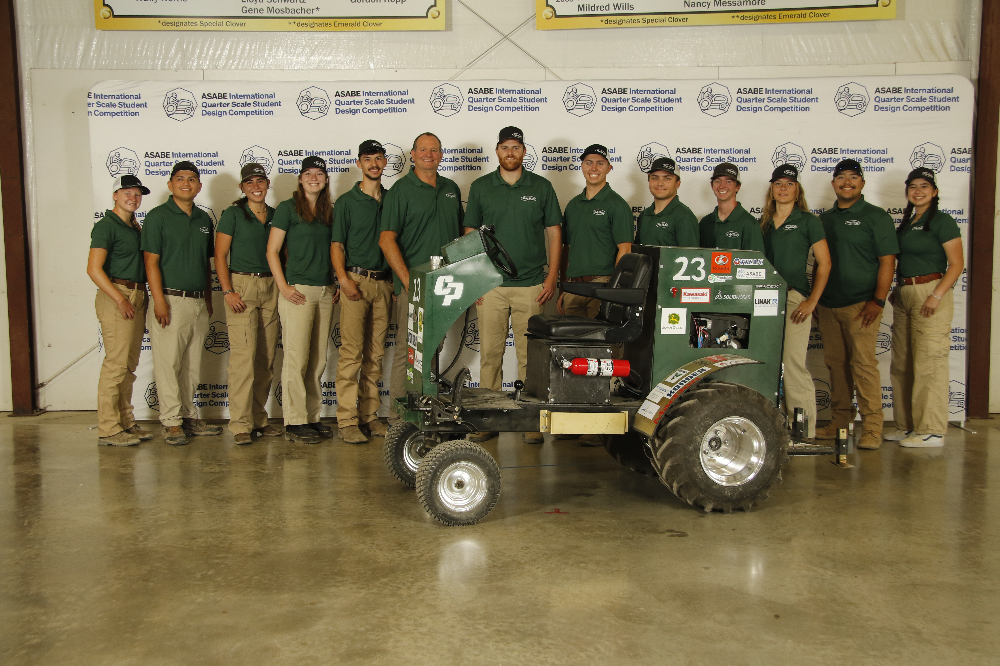
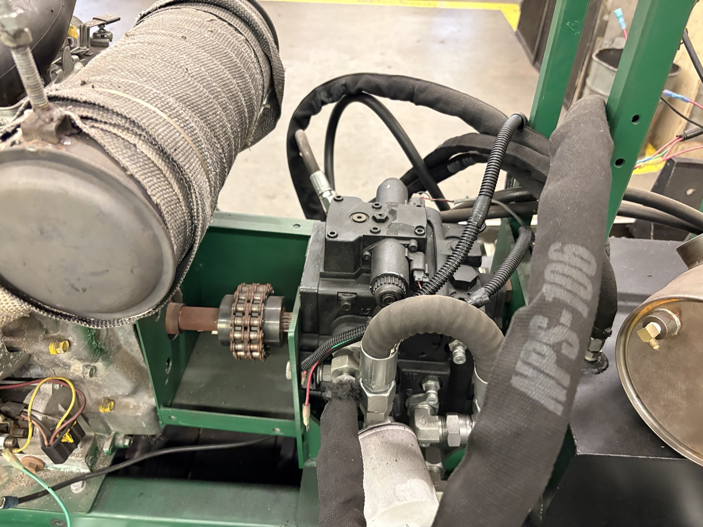

Quarter Scale Tractor

Project Overview
Cal Poly ASABE Quarter Scale Tractor is a student design-build competition project. The team develops and fabricates a functional tractor while integrating structural, hydraulic, drivetrain, steering, braking, and operator-system requirements.
My Role
Structural Lead
As Structural Lead, I led the structural design and fabrication effort for major tractor components and coordinated team members’ work across CAD modeling, manufacturing, and assembly.
Design
Designed and revised SolidWorks models for the tractor frame, engine mount, front axle, hydraulic tank, fuel tank, seat structure, and wheel-motor mounts. Coordinated structural interfaces with other subsystems to support fit, assembly, serviceability, and packaging.

Manufacturing & Fabrication
Oversaw the fabrication and assembly of structural components using machining, welding, CNC plasma cutting, bending, drilling, and mechanical fasteners. Worked with the structural team to move components from CAD models to manufactured hardware and resolve fabrication challenges during assembly.
Testing & Troubleshooting
Supported fit-up and alignment checks during assembly to identify structural and packaging issues before final operation. Revised designs and fabrication approaches as needed to improve component fit, subsystem integration, and manufacturability.
Final Result
Delivered structural components and assemblies that supported the team’s progress toward a functional Quarter Scale Tractor, while building experience in design leadership, CAD-to-fabrication workflow, and mechanical integration.
What I Learned
Learned the importance of designing around real manufacturing constraints, checking subsystem interfaces early, and communicating clearly across a multidisciplinary team. The project strengthened my skills in SolidWorks, fabrication planning, structural design, troubleshooting, and engineering leadership.